反应视频媒体机 v1.21.0
安装媒体机与制作反应视频
选手机在判题后上传指定时间窗的录像。媒体机从 Hydro 领取任务，按版式合成 MP4 并交回比赛管理员审核。以下步骤用一台 CPU 媒体机制作第一条视频。
安装媒体机 下载 Compose 配置准备比赛和媒体机
- Hydro 服务器
- 安装支持录制的插件 v1.21.0，使用 ACM 比赛。比赛所有者或有「编辑比赛」权限的账号负责配置。若侧边栏没有相应入口，请系统管理员确认插件的「启用直播模块」和「启用直播的画面采集」两个开关。插件安装与升级
- 媒体机
- 准备一台能访问比赛站点和容器仓库的电脑，为下载片段和编码输出留出磁盘。Linux 可使用 Docker Engine 和 Compose 插件；Windows、macOS 可使用 Docker Desktop 的 Linux 容器。Docker Compose 安装说明
- 选手机
- 使用可共享整个屏幕的桌面 Chrome 或 Edge，通过 HTTPS 访问比赛。比赛启用摄像头时，还需要相应设备和浏览器授权。赛前在参赛须知写明录制内容、保存期限、联系人和公开范围。
媒体机主动访问 Hydro。部署时需要从容器访问比赛的完整地址；地址中的 localhost 和 127.0.0.1 在容器内指向容器自身。

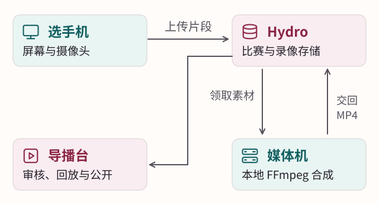
用 Docker Compose 启动
取得本场媒体机地址
进入 比赛侧边栏 → 反应视频 → 媒体机。首次使用点「生成令牌」，然后点「复制接口地址」。如果页面已经显示「复制接口地址」，直接复制。地址末尾的令牌可以领取本场素材、上传成品，应交给媒体机操作员保管。

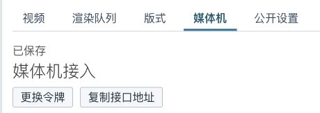
在媒体机创建工作目录
Linux 或 macOS 终端中执行以下命令，确认 Docker 服务可用，然后将配置下载为 compose.yaml。Windows 可以用浏览器下载配置并保存为同名文件，在该目录打开 PowerShell。
docker version
docker compose version
mkdir -p hydro-reactions/out
cd hydro-reactions
curl -fL -o compose.yaml https://albert-li-sz.github.io/Hydro-Contest-Better/media-worker.compose.yaml在 compose.yaml 旁新建名为 .env 的文本文件，保存下列一行。将等号后的示例地址整段替换为刚复制的地址，保留 https:// 和末尾令牌。Windows 保存时确认文件名为 .env。在 Linux 或 macOS 上可运行 chmod 600 .env 限制该文件的读取权限。
HYDRO_REACTIONS_API=https://contest.example/d/system/contest/CONTEST_ID/reactions-api/TOKEN
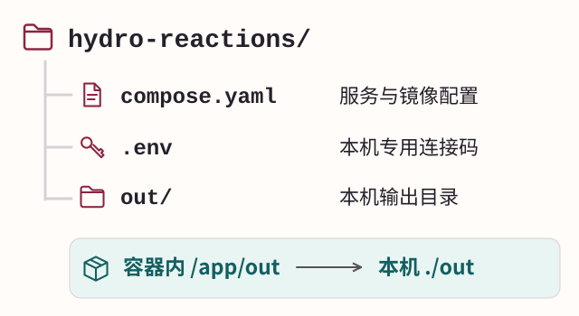
拉取镜像并运行
docker compose config --quiet
docker compose pull
docker compose up -d
docker compose ps配置校验成功时无输出。公共镜像包含 linux/amd64 和 linux/arm64 两种架构，可匿名拉取。首次拉取 ghcr.io/albert-li-sz/reactions-generator-hydro:1.21.0 后，ps 中的 reactions 服务应处于运行状态。FFmpeg 和中文字体随镜像提供，默认使用 CPU。工作目录中的 out 保存本机编码输出和重试标记。查看公开镜像与标签

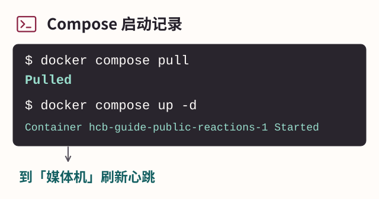
核对 v1.21.0 镜像与实测结果
镜像的多架构索引摘要为 sha256:313e2d0a7773b54fd611bd844c15cdb80641f2eebd58288e093d39ca7ad62785。可用以下命令查看摘要和平台清单。
docker buildx imagetools inspect ghcr.io/albert-li-sz/reactions-generator-hydro:1.21.0Linux amd64 测试机已匿名拉取镜像并启动媒体机命令和 FFprobe。在隔离的 Hydro 5.1.0 比赛中，使用本页 Compose 配置完成横屏 1920×1080 和竖屏 1080×1920 的 H.264 合成、回传和公开分段读取。现场硬件编码可按下文生成样片验证。

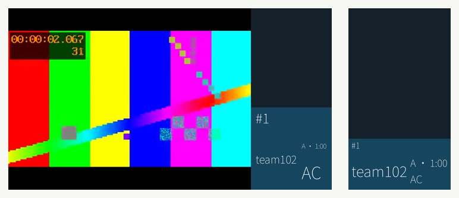
赛场不能访问 GHCR 时，离线导入镜像
在联网电脑下载与目标媒体机 CPU 对应的镜像归档、校验清单和本页 Compose 配置，一并复制到比赛网络。x86_64 选 amd64，aarch64 或 Apple 芯片运行 Linux 容器时选 arm64。媒体机启动后仍需能访问本场 Hydro。amd64 镜像归档 · arm64 镜像归档 · 镜像校验清单 · Compose 配置
在存放归档和清单的目录执行下列命令。arm64 机器将第一行改为 arch=arm64。清单包含两种平台，awk 只选当前文件，校验成功才导入。macOS 可把 sha256sum -c - 换成 shasum -a 256 -c -。
arch=amd64
archive="reactions-generator-hydro-1.21.0-linux-${arch}.tar.gz"
awk -v file="$archive" '$2 == file' reactions-generator-hydro-1.21.0-images.SHA256SUMS | sha256sum -c - && docker load -i "$archive"amd64 导入后会显示 Loaded image: reactions-generator-hydro:1.21.0-amd64。将下列一行追加到保存本场接口地址的 .env。arm64 使用 reactions-generator-hydro:1.21.0-arm64。
HYDRO_MEDIA_IMAGE=reactions-generator-hydro:1.21.0-amd64在 compose.yaml 所在目录执行 docker compose up -d --pull never，使用已导入的镜像启动，再到管理页检查心跳。

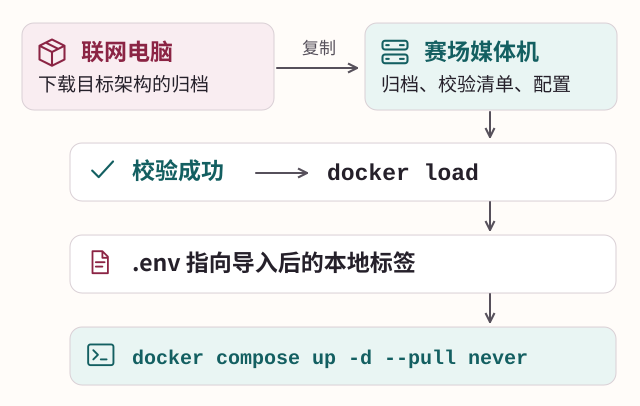
只使用 docker run
以下命令适用于 Bash。执行第一段，按提示粘贴整条媒体机地址并按回车，再执行第二段。默认以前台方式运行，按 Ctrl+C 停止。已有 Compose 媒体机时请使用上述 Compose 流程管理它。
read -rs -p '粘贴本场媒体机地址并按回车：' HYDRO_REACTIONS_API
echodocker run --rm --hostname reactions-01 -v "$PWD/out:/app/out" \
ghcr.io/albert-li-sz/reactions-generator-hydro:1.21.0 \
all "$HYDRO_REACTIONS_API" --hydro-upload
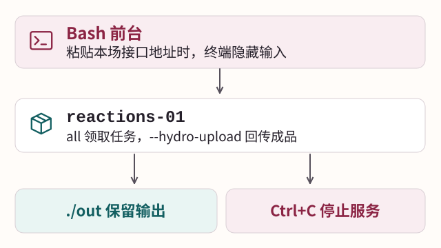
确认媒体机上线
回到 反应视频 → 媒体机，在「媒体机心跳」旁点击「刷新」。找到带有 reactions-01 的机器名，核对版本、分区 0/1 和「在线」。媒体机每 15 秒更新心跳；距上次心跳满一分钟时，页面会显示「离线」。

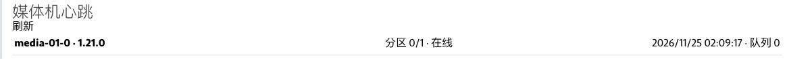
新比赛的队列可以为 0。下一步让一条真实提交产生片段，就能检查完整流程。
录制第一条提交
- 管理员进入 画面采集 → 采集设备，启用本场采集，并将测试机位绑定到参赛队伍或对应座位。
- 进入 录制设置 → 提交片段，勾选「录制提交片段」，首次测试选「所有判完的提交」，点击「保存录制设置」。需要整场审阅时，可另开低码率的「录制全程留档」。
- 在该队的采集窗口点「开始采集」，选择整个屏幕，按本场要求授权摄像头，保持窗口打开。先让它录满提交前的时间窗，默认 20 秒。
- 用同一队伍在正式比赛时间内提交一份可评测的程序。默认截取到通过判定后 40 秒，其他结果后 10 秒。等后段录完并上传，再进入 画面采集 → 录像 查看该提交。

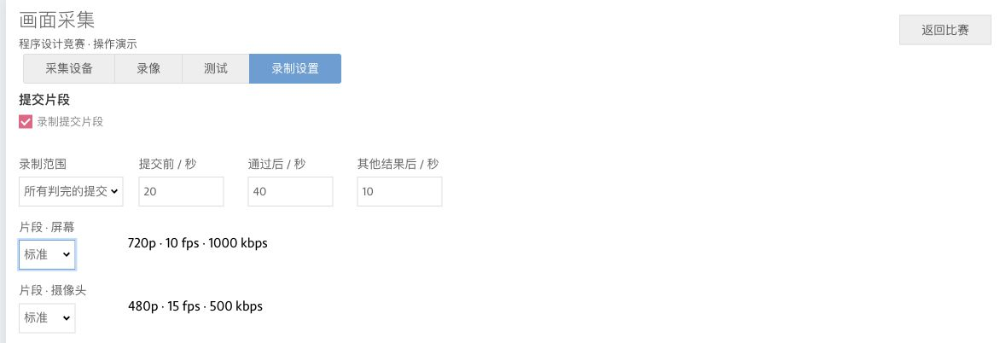
录像状态会从「等待上传」「上传中」变为「已就绪」。点「查看」可分别播放屏幕和摄像头。若某一路只有部分覆盖，管理页会标为「部分缺失」，合成时缺段可出现背景占位。
热身赛怎样试录和测带宽？
进入「画面采集 → 测试」，先选一台在线设备，点「开始设备自检」，约 30 秒后核对分路码率、掉帧和上传吞吐。再选 3–15 分钟的全场压力测试，比较峰值、P95、最大积压及失败率。点击「测试存储写入与读回」可单独测量 Hydro 存储。试录媒体随测试清理，报告留存；首次出片仍需要本场队伍的一条有效提交。

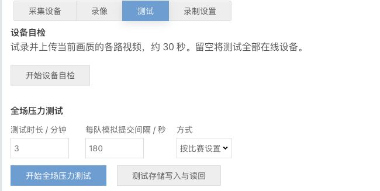
选择版式，检查第一条成品
- 在 反应视频 → 版式 选择竖屏或横屏。竖屏默认突出摄像头，横屏默认同时展示屏幕与摄像头。检查版式的适用结果是否包含测试提交。
- 调整构图时可从「复制为新版式」开始，拖动元素并选择队名、题号、结果等卡片字段。在「预览素材」选内置示例或已录到的提交，点「保存版式」。选中真实提交后，点「生成样片」可检查实际编码效果。
- 在 反应视频 → 渲染队列 看待处理数和媒体机状态。随后在「视频」按队伍、题目或版式筛选；成品状态从「等待」「渲染中」变为「已完成」。点「预览」检查画面与声音，或下载 MP4。

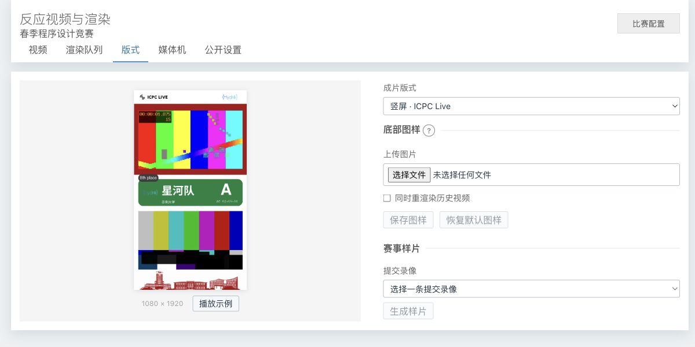
同一提交可按多个版式分别出片。修改版式时，勾选「重渲染已有提交」才会处理历史任务。重测改变判题结果时，旧成品标为「已过期」并重新排队。
导播回放、公开与大屏轮播
- 导播审片
- 在导播台的精选提交或队伍画面中展开「提交回放」。工作人员可预看原始片段及成品。公开 OBS 精选提交受比赛公开规则约束。
- 公开页
- 在「反应视频 → 公开设置」勾选「开启公开页」，选择公开范围、时机、版式、学校和下载选项，点「保存公开设置」。点「打开公开页」，用观众身份核对后再分享单条视频。
- 场馆大屏
- 进入「大屏 → 反应视频轮播」，选择一血或所有通过，设置分榜、轮播版式和每条播放秒数，打开该画面的投屏链接。可为大屏单独选横屏，公开页继续用竖屏。

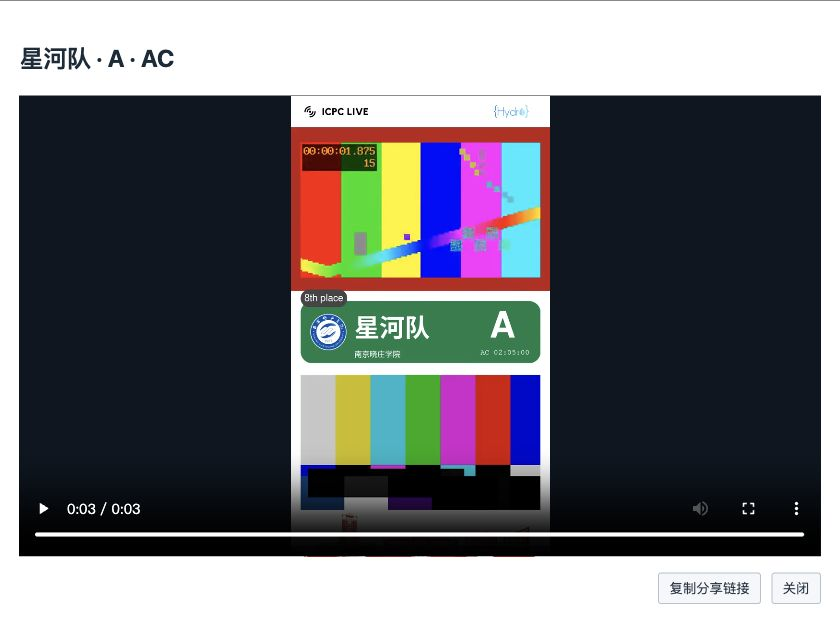
公开默认关闭，启用后的默认时机为「解除封榜后」。即使选「比赛结束后」，终场仍封榜时也只可显示封榜前的提交。赛中要公开含屏幕的版式，检查「比赛中屏幕」及直播的「比赛中直播可用屏幕」两个设置。启用 CCPC 隐藏题号规则时，赛中公开受限。
需要收回时，在管理端对应成品点「撤下」，该成品的公开页、大屏和原分享链接会停止提供播放；点「恢复」后仍要符合当前公开规则。已下载的副本由持有者保管。选择隐藏学校时，系统还会排除已烧录学校字段或学校 Logo 的版式；自定义图片、文字和实拍画面由工作人员审片确认。
多机分区与硬件编码
两台机器分摊同一场比赛
两台电脑各自下载同一份 Compose 配置，保留本场相同的 HYDRO_REACTIONS_API 和独立的 out 目录。在各自 .env 末尾加入对应设置。
第一台
HYDRO_MEDIA_NODE=reactions-01
HYDRO_WORKER_TOTAL=2
HYDRO_WORKER_ID=0第二台
HYDRO_MEDIA_NODE=reactions-02
HYDRO_WORKER_TOTAL=2
HYDRO_WORKER_ID=1在两台机器分别执行 docker compose up -d。后台应出现 0/2 和 1/2 两个在线分区。分区按提交 ID 分派，一条提交的多个版式由同一分区处理。某个分区离线时，可以在替代机器上用同一分区号继续处理。

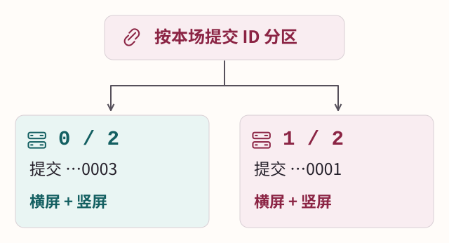
按媒体机硬件选择编码器
- CPU
- 默认使用 CPU，可直接运行上述配置。建议先完成一条样片，再决定是否启用硬件编码。
- NVIDIA
- Linux 主机需提供驱动、NVIDIA Container Toolkit 和可用的 H.264 NVENC。给 Compose 服务配置 GPU 访问，在
.env设置HYDRO_HARDWARE=nvidia。可选的nvidia_full还依赖 CUDA 叠加滤镜和版式越界检查。Docker Compose 的 GPU 配置 - Intel / VAAPI
- Linux 主机及容器内需具备相应媒体驱动。将
/dev/dri映射到容器的同一路径；Intel QSV 选HYDRO_HARDWARE=qsv，VAAPI 选HYDRO_HARDWARE=vaapi。本版 VAAPI 使用/dev/dri/renderD128。 - Apple 芯片
- 要使用 VideoToolbox，请在 macOS 本机运行。下载发布附件
reactions-generator-hydro-1.21.0.tar.gz，解压后进入reactions-generator-hydro，安装 Python 3.12、Poetry、FFmpeg 和 FFprobe，再执行下列命令。下载媒体机源码包
poetry install
poetry run main all '替换为本场媒体机接口地址' --hydro-upload --hardware apple更改 Docker 硬件配置后运行 docker compose up -d，重新生成一条样片并验证播放。驱动、设备权限和镜像内 FFmpeg 提供的编码器都会影响硬件模式可用性。

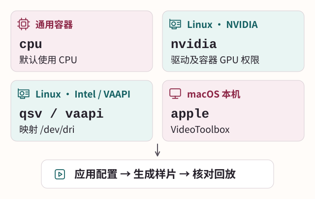
更新、停机与故障排查
以下命令在保存 compose.yaml 的目录执行。stop 可在赛后暂停服务，start 可恢复同一容器。升级时在本机 .env 中将 HYDRO_MEDIA_IMAGE 设为新版本镜像全名，执行 docker compose pull、docker compose up -d，再到管理页核对版本和心跳。
docker compose ps
docker compose logs --tail=100 reactions
docker compose stop
docker compose start
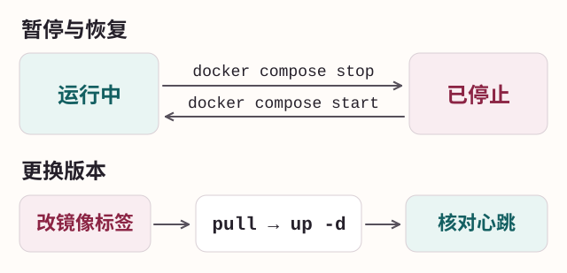
- 拉取镜像失败
- 核对
ghcr.io/albert-li-sz/reactions-generator-hydro:1.21.0、主机架构，以及 Docker 守护进程到 GHCR 的网络和代理。能访问网页的终端与执行镜像拉取的守护进程可能使用不同代理。 - 没有心跳
- 检查容器是否运行，查看最近日志。如果是 DNS、连接超时或证书错误，检查媒体机能否解析并访问比赛域名，以及 TLS 证书链。若接口返回 404 或权限错误，重新复制本场完整接口地址并更新
.env，然后执行docker compose up -d。令牌更换会使原地址立即失效，所有本场媒体机都需同步更新。 - 在线但没有任务
- 依次核对「录制提交片段」、比赛时间、队伍绑定、设备共享状态及录制范围。先在「录像」找到对应提交，再检查版式适用范围、多机分区是否齐全。「全程留档」与「测试」各有独立用途。
- 片段缺失或画面空白
- 在「录像」查看发生缺失的时间段及原因。首次提交前应先累积录制窗口；导播仅需要摄像头时，可选匹配的竖屏版式。若素材存在但合成失败，检查媒体机磁盘、日志与硬件编码器，修复后点「重渲染」。
- 已完成但观众看不到
- 检查是否开启公开页，核对版式、结果范围、封榜时机、学校和屏幕限制，以及该条是否已撤下。只在大屏缺失时，再核对大屏的分榜、版式和「只播一血」设置。

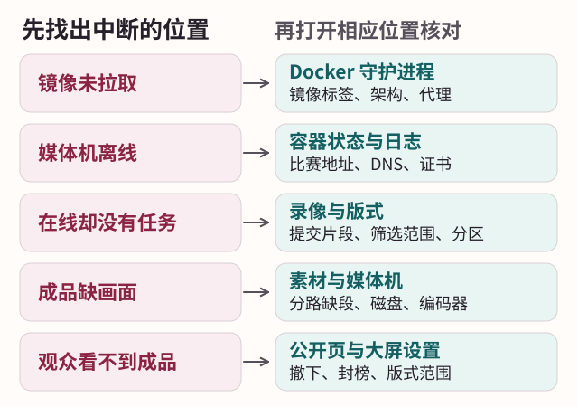